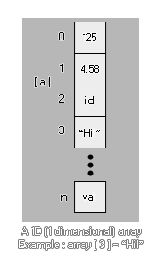

Les tableaux peuvent sembler confus au début, mais ils peuvent être extrêmement utiles et sont une partie essentielle de la création de jeux. Pourquoi? Eh bien, voici quelques choses qui seraient impossibles sans tableaux -
- Menus Un tableau ou deux peut rendre beaucoup plus facile de créer un bon système de menu.
- RPGs. Les tableaux sont essentiels pour créer des RPG, car au lieu d'avoir un fouillis de variables, vous n'avez que quelques lignes, auxquelles vous pouvez vous référer à tout moment.
- Jeux de cartes. Bon pour garder la trace des cartes et des mains et peut même être mélangé!
- Des scores élevés et d'autres statistiques. Il est beaucoup plus facile de suivre un tableau que plusieurs variables.
Ce n'est que la pointe de l'iceberg car les tableaux sont l'un des outils de programmation les plus fondamentaux et les plus utiles que vous pouvez utiliser, et vous seriez surpris des applications qu'ils peuvent avoir! Vous pouvez utiliser différents types de tableaux dans GML et ils sont décrits dans les sections suivantes:
D'accord, nous pouvons utiliser un tableau pour les choses mentionnées ci-dessus, mais qu'est-ce qu'un tableau? À quoi cela ressemble-t-il? Eh bien, quelque chose comme ça... 
array[0] = 1.25;
Ceci est un tableau 1D (unidimensionnel) dont nous allons maintenant décomposer les parties pour voir ce que cela signifie:
array
C'est le nom du tableau. Comme n'importe quelle autre variable, il peut être tout ce que vous voulez simplement de "a" à "mymumscow".
[0]
C'est la position dans le tableau que nous vérifions ou changeons. Vous voyez, un tableau est essentiellement un conteneur avec un certain nombre d'espaces pour stocker des valeurs, et chaque position dans le conteneur a un numéro spécifique pour l'identifier, ce qui est ce que nous mettons dans le []. Il est à noter qu'un tableau commence toujours à 0 et ne peut jamais être négatif! Maintenant élargissons notre tableau pour inclure différentes positions...
array[2] = 0;
array[1] = 0;
array[0] = 0;Notre tableau contient maintenant trois positions (0, 1 et 2) et nous avons initialisé notre tableau à 0. Qu'est-ce que cela signifie? Eh bien, un tableau doit être initialisé avant que nous puissions l'utiliser ou GameMaker Studio 2 nous donnera une erreur. L'initialisation d'un tableau signifie simplement que nous donnons à chaque position du tableau une valeur initiale en préparation pour qu'il soit utilisé ailleurs dans l'objet ou le code. Ceci est important à retenir car cela signifie que vous devez faire une certaine planification avant d'utiliser des tableaux, mais il est assez facile d'en initialiser un en utilisant une boucle de répétition comme celle-ci...
var i = 9;
repeat(10)
{
array[i] = 0;
i -= 1;
}Ce code simple va initialiser un tableau de dix positions (0-9) à 0, en ce que chaque position dans le tableau contient la valeur 0. Vous remarquerez que le tableau a été initialisé à l' envers, la dernière valeur étant définie en premier. Ce n'est pas strictement nécessaire mais c'est la façon optimale de le faire car il va réserver un espace en mémoire qui est la taille exacte du tableau, alors que si vous initialisez un tableau de 0 vers le haut, la mémoire doit être réallouée pour chaque valeur ajoutée supplémentaire. La différence de vitesse est négligeable pour les réseaux plus petits, mais les plus grands devraient être optimisés autant que possible de cette façon.
Mais que faire si nous voulons initialiser le tableau avec des valeurs différentes pour chaque position? Eh bien, pour cela, nous devons taper manuellement chaque position, mais il y a une bonne astuce pour nous aider à garder une trace des choses là aussi!
count = 3;
array[count] = "you?"
count -= 1;
array[count] = "are "
count -= 1;
array[count] = "How "
count -= 1;
array[count] = "Hello!"
count -= 1;Comme vous pouvez le voir, nous n'avons utilisé aucun nombre dans le tableau actuel, mais plutôt une variable pour décompter les valeurs. Cela a deux avantages - Premièrement, nous n'avons pas à nous soucier des fautes de frappe ou des erreurs lors de l'écriture des positions de tableau, et deux, nous avons dans la variable "count" le nombre de positions que le tableau contient, qui peut alors être utilisé ailleurs dans l'objet. Très utile!
Enfin, vous pouvez affecter les valeurs à un tableau en utilisant un seul appel de variable comme ceci:
var a = [0, 1, 2, 3, 4];
var b = [];Ce qui précède va créer deux tableaux comme variables locales, le premier déjà rempli avec 5 éléments et le second comme un tableau vide prêt à avoir des valeurs ajoutées.
Avec cela fait comment utilisons-nous un tableau pour des choses pratiques? Exactement le même que nous utiliserions une variable normale, comme le montrent les exemples suivants:
total = array[0] + array[5]; //Add two array values together
if (array[9]) == 10 //Check an array value
{
//do something
}
draw_text(32, 32, array[3]); //draw an array valuePuisque les tableaux sont numérotés consécutivement, cela signifie que vous pouvez les parcourir pour effectuer des actions supplémentaires, comme nous l'avons fait pour l'initialiser:
var total = 0;
for (var i = 0; i < 10; i++;)
{
total += array[i];
draw_text(32, 32 + (i * 32), array[i]);
}
draw_text(32, 32 + (i * 32), total);Le code ci-dessus va ajouter toutes les valeurs dans notre tableau, dessiner chacun d'eux et dessiner la valeur totale à la fin.
Maintenant que nous savons à quoi ressemble un tableau normal, regardons un tableau 2D (bidimensionnel).
array[0, 0] = 5;
Comme précédemment, chaque nombre pointe vers une position dans le tableau, mais cette fois-ci, chaque position a une coordonnée "a" et "b". Pensez-y comme une dimension supplémentaire à notre conteneur, car il a maintenant la hauteur et la largeur alors que le tableau 1D n'a que la hauteur. Voici un exemple étendu:
array[1, 2] = 1;
array[1, 1] = "hello";
array[1, 0] = 55.5;
array[0, 2] = sprite_index;
array[0, 1] = "world";
array[0, 0] = -67.89;Un tableau 2D doit être initialisé avant utilisation, comme un tableau 1D, et peut contenir des nombres réels, des chaînes et des constantes, comme n'importe quelle autre variable, ce qui en fait des candidats idéaux pour tout jeu qui doit stocker de grandes quantités de données dans un manière facilement accessible (rappelez-vous, vous pouvez facilement parcourir un tableau). Voici un dernier exemple de la façon dont cela peut être utilisé dans un jeu réel... Supposons que vous vouliez générer quatre ennemis différents à quatre points différents de votre jeu en fonction d'une valeur aléatoire. Eh bien, nous pouvons utiliser un tableau 2D pour faire cela et sauvegarder l'écriture d'une charge de code.
Nous devons d'abord initialiser le tableau que nous allons utiliser dans l'événement create de notre objet "controller" (notez l'utilisation de commentaires pour vous rappeler ce que fait chaque entrée de tableau):
enemy[3, 2] = 448; //y position
enemy[3, 1] = 32; //x position
enemy[3, 0] = obj_Slime; //Object
enemy[2, 2] = 448;
enemy[2, 1] = 608;
enemy[2, 0] = obj_Skeleton;
enemy[1, 2] = 32;
enemy[1, 1] = 608;
enemy[1, 0] = obj_Knight;
enemy[0, 2] = 32;
enemy[0, 1] = 32;
enemy[0, 0] = obj_Ogre;Nous avons maintenant les objets pour engendrer des instances de et leurs coordonnées spawn x et y correspondantes dans la pièce toutes stockées dans notre tableau. Cela peut maintenant être utilisé comme suit dans un autre événement de l'objet contrôleur (une alarme par exemple, ou un événement de pression de touche):
var i;
i = irandom(3); //get a random number from 0 to 3, inclusive
instance_create_layer(enemy[i, 1], enemy[i, 2], enemy[i, 0], "Enemy_Layer"); //Use the array to create the objectCe code court va maintenant engendrer un ennemi aléatoire dans la salle de jeu, et il utilise beaucoup moins de code qu'une structure "if / then / else" ou même un "switch", et comme le tableau est initialisé tous ensemble dans l'évènement create est BEAUCOUP plus facile à éditer et à modifier l'une de ces valeurs car elles ne sont pas codées en dur dans le reste des codes d'objet. Il est également important de noter que la longueur de chaque tableau 2D peut être différente, donc vous pouvez avoir un tableau avec une hauteur de 2, mais l'entrée 0 pourrait être 2 en longueur, l'entrée 1 pourrait être 4 en longueur et l'entrée 2 pourrait être 3 en longueur:
array[0, 0] = 1;
array[0, 1] = 2;
array[1, 0] = "one";
array[1, 1] = "two";
array[1, 2] = "three";
array[1, 3] = "four";
array[2, 0] = "1";
array[2, 1] = "2";
array[2, 2] = "3";
Tout comme les variables normales, vous pouvez passer des tableaux à des scripts à utiliser, puis les renvoyer à l'instance qui a appelé le script. Pour ce faire, vous devez simplement spécifier la variable tableau (pas besoin de chacune des entrées individuelles, ni les crochets []) et le tableau sera transmis par référence dans le script. Toutefois, si vous modifiez l'une des valeurs du tableau, le tableau sera copié dans un tableau temporaire uniquement pour le script. Notez l'utilisation du mot temporaire ici! Vous ne passez pas le tableau lui-même dans le script (comme vous le feriez pour une variable), mais vous demandez au script de créer une copie de ce tableau, que vous allez modifier dans le script. Cela signifie que vous devez toujours renvoyer le tableau depuis le script si vous souhaitez modifier les valeurs de tableau.
Remarque: en raison de la façon dont cela fonctionne en interne, le passage de tableaux à des scripts peut affecter les performances, en particulier si le tableau est très volumineux. Alors utilisez cette fonctionnalité avec soin!À titre d'exemple, considérez le code suivant. Nous créons d'abord le tableau que nous voulons utiliser, puis nous passons ce tableau au script:
for (var i = 9; i > -1; i--;)
{
a[i] = i;
}
scr_Return_Array(a);Le script lui-même est quelque chose de simple comme:
for (var i = 9; i > -1; i--;)
{
a[i] = i * 100;
}Maintenant, vous vous attendez à ce que le tableau final contienne les valeurs 900, 800, 700, etc... MAIS ce ne sera pas le cas, puisque nous n'avons pas renvoyé le tableau du script, donc tout ce que nous avons changé était la copie temporaire créé lorsque nous avons passé le tableau en tant qu'argument dans le script. Pour remédier à cela, nous aurions dû formater le code comme suit:
for (var i = 9; i > -1; i--;)
{
a[i] = i;
}
a = scr_Return_Array(a);Et le script devrait maintenant ressembler à ceci:
for (var i = 9; i > -1; i--;)
{
argument0[i] = i * 100;
}
return argument0;Remarque: ce qui précède n'est pas nécessaire si vous ne modifiez aucune des valeurs de tableau, mais simplement en les référençant. Référencer un tableau ne le copiera pas et sera plus rapide à analyser.Vous pouvez également supprimer un tableau simplement en "réattribuant" la variable qui le définit à une seule valeur. Cela libèrera la mémoire associée à toutes les entrées et valeurs de ce tableau. Par exemple:
//Create the array for (var i = 9; i > -1; i--;)
{
a[i] = i;
}
//Delete the array a = 0;Il est également intéressant de noter que vous pouvez utiliser l'accesseur @ faire référence à un tableau à partir d'un script et modifier directement ses valeurs, ce qui évite à l'unité centrale de l'avoir copiée dans le script. Vous pouvez trouver plus d'informations sur les accesseurs et leur fonctionnement, ainsi qu'un exemple pour les tableaux, à partir de la page suivante:

Fonctions de tableau
Il y a aussi quelques fonctions associées à l'utilisation des tableaux. Ceux-ci sont conçus pour vous donner de la flexibilité dans votre code, et vous permettront de créer des tableaux plus fonctionnels et dynamiques lors de vos jeux. Ces fonctions sont: